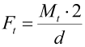
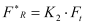
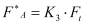

|
|
|


联轴器
联轴器传递扭矩，也可能承受径向力和轴向力。根据扭矩（或指定的功率和转速），可以按下式计算圆周力：
|  | (25.2) |
| Ft | = 圆周力 |
| Mt | = 扭矩 |
| d | = 有效直径 |
计算联轴器的径向力：
|  | (25.3) |
| Ft | = 圆周力 |
| K2 | = 径向力系数 |
在输入窗口中定义力的方向。系统还会提示您输入联轴器的质量，以便将其作为重力纳入计算。
计算联轴器的轴向力：
|  | (25.4) |
| Ft | = 圆周力 |
| K3 | = 轴向力系数 |
轴向力沿轴的中心线作用。
Coupling
A coupling transmits torque and can also be subject to radial and axial forces. From the torque (or the specified power and speed) you can calculate the circumferential force to
| (25.2) |
| Ft | = Circumferential force |
| Mt | = Torque |
| d | = Effective diameter |
Calculating radial force for a coupling:
| (25.3) |
| Ft | = Circumferential force |
| K2 | = Radial force factor |
Define the direction of the force in the input window. You are also prompted to enter the mass of the coupling so it can be included in the calculation as a gravitational force.
Calculating axial force for a coupling:
| (25.4) |
| Ft | = Circumferential force |
| K3 | = Axial force factor |
Axial force acts along the center line of the shaft.